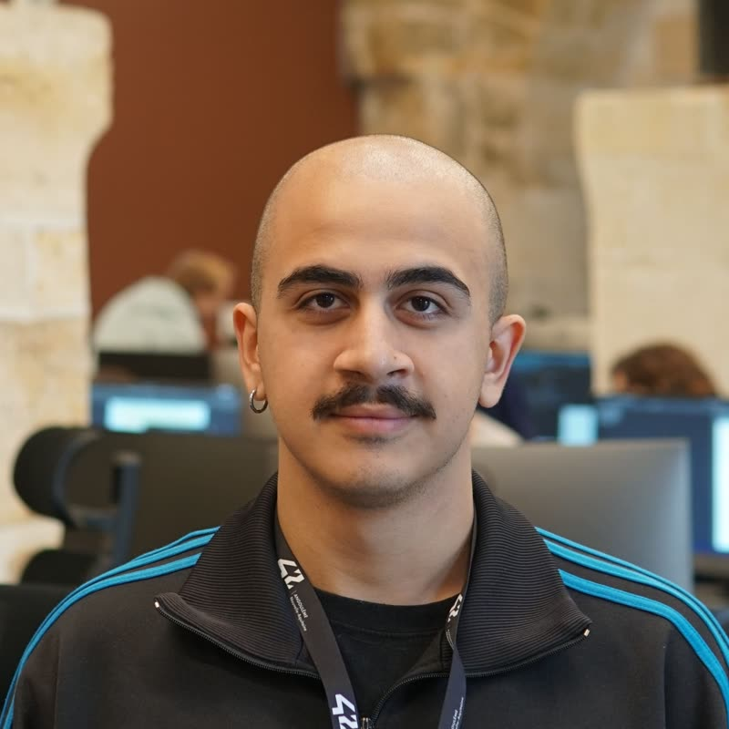

Saïna, France
Weld seam analysis for engineering simulations
A desktop tool that parses ANSYS results, finds weld seams, manages materials and fatigue cycles, and renders it all in 3D. I was the only engineer, for six months.
I build AI systems that run unattended in production, and the verification that makes them trustworthy.
I ship with AI coding agents and verify every change with automated tests.
Call my AI agent, live now+995 32 2 193 384It answers in Georgian, knows Satli's products and can pass a message to the team.

Yvito TV
DialyzeAI transcribes and scores every call at Alta, a Georgian electronics retailer. A truth-check gate verifies each AI finding against the transcript.
Saqme To Do, open source
Markdown lists you and your AI edit together, on desktop and phone. The engine exists in two languages, kept identical by one shared test suite.
Saïna, France
A desktop tool that parses ANSYS results, finds weld seams, manages materials and fatigue cycles, and renders it all in 3D. I was the only engineer, for six months.
 DialyzeAICall analytics and QA
DialyzeAICall analytics and QA
 TekstisAIAnalytics for chats, tickets and comments
TekstisAIAnalytics for chats, tickets and comments
 ZariAIGeorgian-first AI phone agent
ZariAIGeorgian-first AI phone agent
 CatalogueAIProduct catalogues from a model list
SSaqme To DoOpen-source to-do app for you and your AI
WSaïna analysis toolWeld seams and fatigue on ANSYS data
42École 42Systems projects in C and C++
CatalogueAIProduct catalogues from a model list
SSaqme To DoOpen-source to-do app for you and your AI
WSaïna analysis toolWeld seams and fatigue on ANSYS data
42École 42Systems projects in C and C++